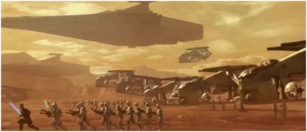
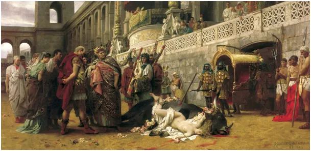

Energia i informacja, klucze do potęgi w XXI wieku.
Wszędzie znajdziemy podsumowania roku, dlatego zabrałem się za podsumowanie ćwierćwiecza.
Energia to słowo numer jeden wieku XXI. Szybko rozwijająca się automatyzacja, w tym głównie w sektorze zbrojeniowym, prowadzi w wyścigu cywilizacji do spadku wartości człowieka.
Wiek XX był czasem, gdy człowiek był niezastąpiony, dlatego na wojnach tej epoki zabito ponad 100 mln ludzi. Obecnie wroga naszej cywilizacji kultura narzucona z zewnątrz powoduje, że sami się wyniszczamy przez brak dzieci. Na użytek tego tekstu przyjmijmy, że kultura to zbiór wiedzy, czyli informacja, jaką posiada społeczeństwo i sposób jej wykorzystania. Na naszych oczach wiedza akumulowana od przeszło siedmiu tysięcy lat, znika z masowego obiegu jak kamfora. Ostatnie 4 lata pokazały nam, że naukowcy, kasta, która ma stać na straży wiedzy i rozsądku okazała się sprzedajną bandą urzędasów niskiego lotu.
Za nami już prawie ćwierć wieku XXI z marnym bilansem. Poziom życia "zachodu" spada, długość życia spada, metraż mieszkań spada, zakres osobistej wolności spada drastycznie. Wygląda na to, że przegraliśmy wojnę i jesteśmy w niewoli, ale jaką wojnę i z kim?
Każda wojna zaczyna się i kończy na mapie i aby dobrze widzieć sytuacje na froncie trzeba spojrzeć z daleka, by uniknąć błędu paralaksy. Nasza perspektywa powinna bardziej rozwijać się w czasie niż w przestrzeni, dziś historia najnowsza jest ważniejsza niż globus. Jeszcze 25 lat temu rządy państw decydowały o tym, co robią na swych terytoriach, skąd kupują surowce, z kim handlują na jakich zasadach. Tu konieczny jest mały przypis: Od 1945 wolno zawierać poważne transakcje tylko w dolarze USA, kto się wyłamuje traci kraj i życie. Poza tą zasadą panowała dość duża dowolność, ale wraz z rozwojem rósł popyt na te czarodziejskie zielone papierki. Ich emitent, okupujący USA od 1913 roku, stał się tak potężny, że może dziś narzucać dowolne zasady prawie na całym świecie. W postaci praw do emisji CO2 już drugą dekadę zbiera podatek od produkcji energii, a zasada jest prosta: im tańsza technologia, tym podatek wyższy. W ten prosty sposób wylądowaliśmy w sytuacji gdzie: a/ Produkcja energii jest bardzo droga, b/Szybkość przepływu kapitału do emitenta zielonej waluty rośnie.

Myślę, że z niecierpliwości odpalono ten scenariusz, gdy istnieją jeszcze niezależne ośrodki polityczne w Azji, które mają apetyt na dominację w najbliższej przyszłości. Reakcja Chin jest dość oczywista, potakują, popierają "zieloną transformację" i palą węglem na potęgę szybko zyskując przewagę ekonomiczną. Postępuje tak praktycznie cała Azja z wyjątkiem kilku bliskich wasali USA. Nawet kluczowi gracze w NATO jak Turcja, grają w tej komedii z prawdziwym wdziękiem. W tureckich sklepach za kilka złotych kupimy "bezemisyjny węgiel drzewny” na grilla, to samo dzieje się na poziomie przemysłowym. Tamtejsza farsa to dla Europy dramat, bo tutaj zielona rewolucja jest odgrywana na serio i zalewamy kopalnie na zawsze.

Pesymiści mówią, że zostaniemy ostatnim Mohikaninem broniącym naszego rezerwatu. Są jednak znaki, jak np. sprzedaż TVN-u "stronnictwu ciemnoty", który za pomocą tej stacji ma "ciemnotę" rozszerzyć na "oświeconych Europejczyków". Wiemy z badań i z doświadczenia, że Europejczycy po kilku godzinach naświetlania telewizorem zmieniają swoje sympatie i szybciej niż myślimy może dojść do takiego masowego przeprogramowania. Samo w sobie jest to dla ludzkości przykre doświadczenie tak masowego braku własnych przemyśleń, ale skoro słowem się nie da, to telewizorem trzeba.
Życzę Państwu, aby w Nowym Roku normalność stawała się codziennością czego tak dawno nie zaznaliśmy na naszej ziemi.
Paweł Klimczewski